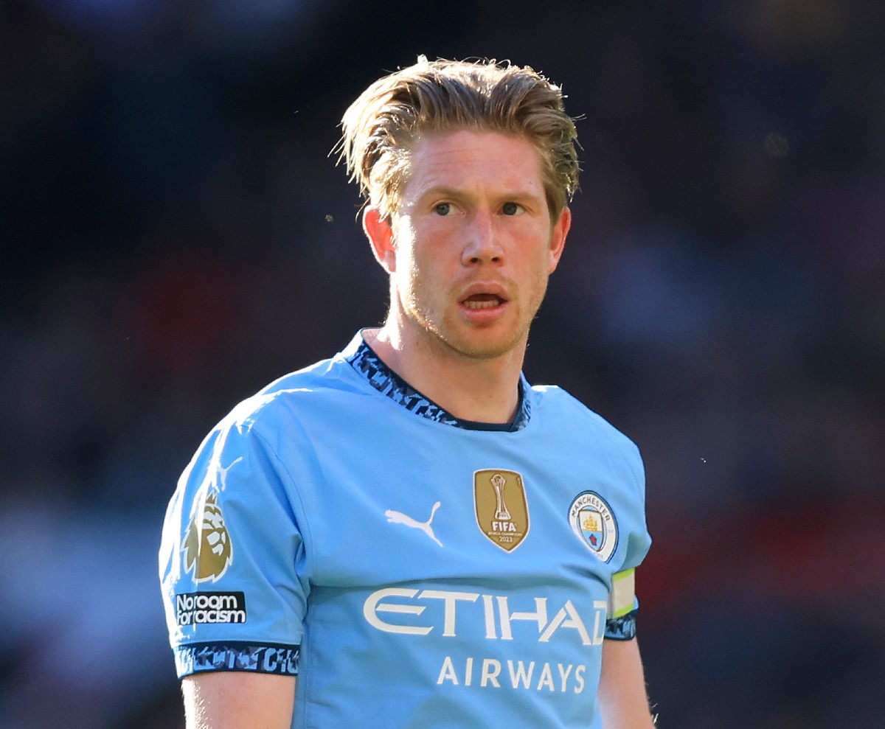
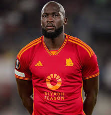
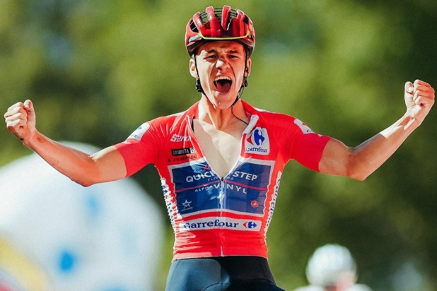

BELGIUM |
|||
Characters |
|||
| HOME| SPORTS | CHARACTERS | PLACES | HISTORICAL FACTS | GASTRONOMY | ECONOMY | |||
|  |  |  | |
Names |
Kevin De Bruyne | Lukaku | Remco Eveneopel |
Description |
Kevin De Bruyne is one of football’s ultimate conductors—the kind of player who seems to see the game half a second before everyone else. He’s a Belgian midfielder, best known for his years at Manchester City, where he’s been the creative engine of a trophy-winning era. De Bruyne plays mostly as an attacking or central midfielder, but that label barely contains him. His real superpower is vision: he spots passes others don’t even imagine, then executes them with ridiculous precision—low, fast through balls, perfectly weighted crosses, or inch-perfect switches of play. Physically, he’s strong and tireless rather than flashy—ginger hair, sharp features, and a no-nonsense look that matches his style. He’s not about stepovers or showboating; he’s about efficiency and brutality. When he shoots from distance, it’s usually a missile. When he assists, it’s often devastating. Personality-wise, De Bruyne is intense, competitive, and quietly ruthless. He leads more by example than by speeches, and he has a reputation for being demanding—because he expects teammates to think as fast as he does. |
Romelu Lukaku is a powerhouse striker built to overwhelm defenses—part athlete, part finisher, part force of nature. He’s a Belgian forward known for his physical dominance: tall, massively strong, and explosively fast for his size. Defenders bounce off him, and once he gets a step on you, it’s usually over. Lukaku thrives as a classic No. 9—playing on the shoulder of the last defender, holding up the ball, then turning brute strength into goals. In front of goal, he’s direct and decisive. He scores with both feet, is dangerous on the break, and excels when given space to run into. At his best, he’s a transition monster—devastating on counterattacks and lethal when attacking crosses or cutbacks. Technically, he’s sometimes criticized for heavy touches in tight spaces, but that’s never been the point of his game. Lukaku is about power, positioning, and efficiency, not finesse. Give him momentum and service, and he will punish teams. Off the pitch, he’s thoughtful and multilingual, deeply invested in his career and legacy. On the pitch, he’s emotional, intense, and thrives on confidence—when he feels trusted, he looks unstoppable. |
Remco Evenepoel is cycling’s modern prodigy—the kind of rider who doesn’t wait his turn, he just takes over. He’s a Belgian professional cyclist known for his explosive power, fearlessness, and relentless aggression. Evenepoel excels as a time trialist and stage-race leader, but what really defines him is how he races: he attacks early, attacks hard, and forces everyone else to react. Subtlety is optional. Physically, he’s lean and aerodynamic, built for sustained power rather than pure sprinting. On climbs, he rides at a brutal, metronomic pace that slowly breaks rivals. In time trials, he looks almost mechanical—head low, cadence smooth, absolutely locked in. Mentally, Remco is intense and unapologetically ambitious. He races with supreme self-belief, sometimes bordering on defiance, and he’s never afraid to go solo from far out. Critics may call him reckless; fans call him refreshingly honest in an era of cautious racing. His palmarès already includes Grand Tour success, Monument wins, World Championships, and Olympic gold—achievements that underline just how special he is, even at a young age. |
|
Copy Right Mehir Calderon, Diego Gallo, Mafer Camarena, Mateo Medel, Damian Gomez and Paola Castro 2026© |
|||